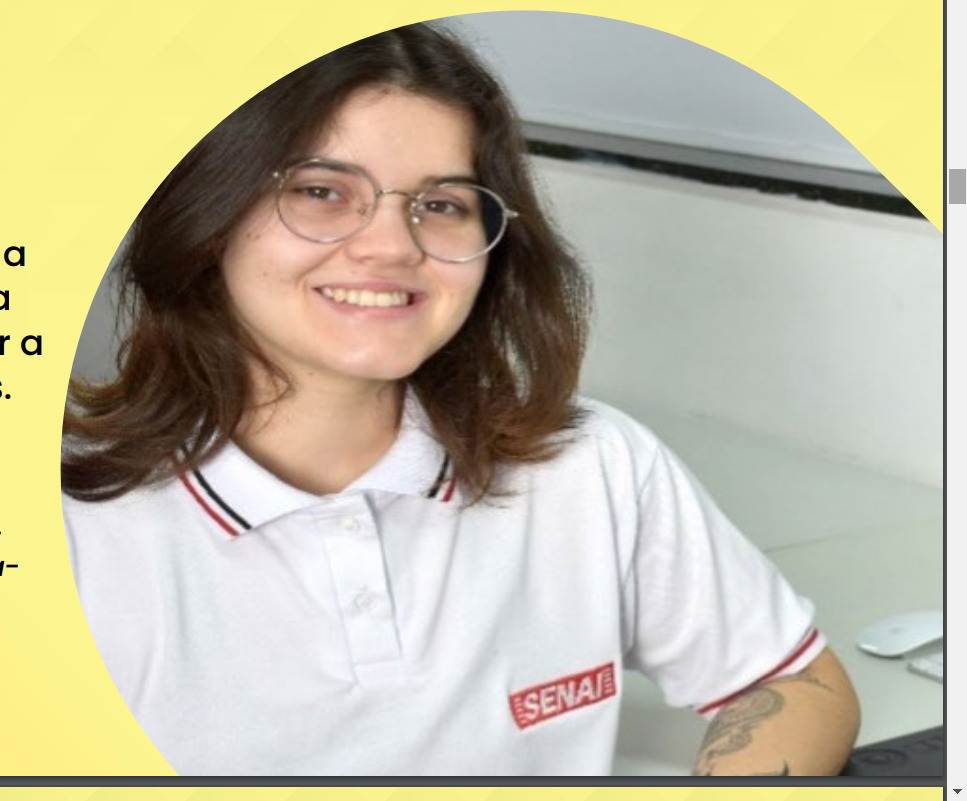

• Reconhecimento e valoração da diversidade
• Combate ao racismo institucional
• Diálogo aberto e escuta ativa
• Ações concretas e monitoramento
• Engajamento da comunidade escolar
• Através da implementação de práticas antirracistas abrangentes e consistentes, as escolas podem se tornar espaços de aprendizagem verdadeiramente inclusivos e equitativos, onde todos os alunos se sintam valorizados, respeitados e com as mesmas oportunidades de sucesso.
O Brasil deu um passo importante ao criar o ODS 18, uma iniciativa inédita que coloca o combate ao racismo no centro dos esforços para construir um futuro mais justo e sustentável.
Brenda disse ter se inspirado em uma amiga do ensino médio para criar a marca vencedora, que mostra a silhueta de uma mulher negra com a figura de um homem indígena no cabelo. A ideia foi enfatizar que a luta étnico-racial é uma jornada coletiva, na qual cada contribuição é vital para alcançar a justiça e a igualdade para todas as pessoas.
A imagem criada por Brenda Gomes Virgens, de 19 anos e aluna no SENAI de Barueri, foi a vencedora de um concurso e representará o ODS 18.
Importância da representatividade
A representatividade é fundamental para a construção de uma sociedade mais justa e igualitária, fortalecendo laços e criando conexões como:
• Lideranças negras: fortalecimento de lideranças negras em diversas áreas, como política, educação, cultura e empreendedorismo;
• Visibilidade: engajamento da comunidade negra, desafiando os estereótipos negativos;
• Empoderamento: oferecendo ferramentas e recursos para que elas possam superar os obstáculos e alcançar seus objetivos.
Construir uma rede de apoio é vital para a população negra, cuja cultura, valores e representatividade se encontram. Ao fortalecer os laços comunitários, celebrar a diversidade e combater o racismo, a solidariedade contribui para a construção de um futuro mais justo e igualitário para todos.
Mais locais para se fortalecer e aprender
• A cor da cultura: virada da consciência (viradadaconsciencia.com.br) | Museu Afro Brasil
• FlinkSampa: festa do conhecimento, literatura e cultura negra | virada da consciência (viradadaconsciencia.com.br)
• Arquivo de Cultura: AlmaPreta
• Museu das Favelas: São Paulo, SP